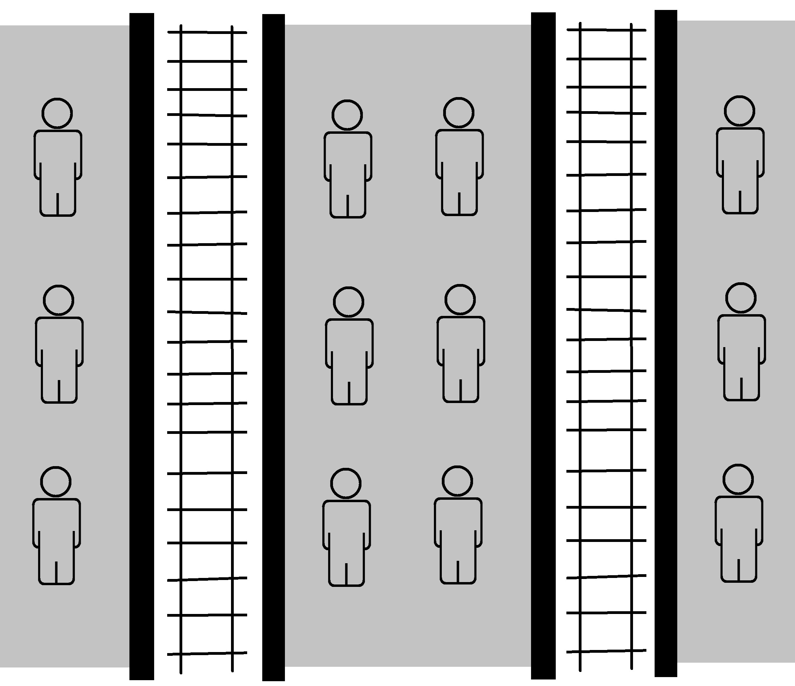
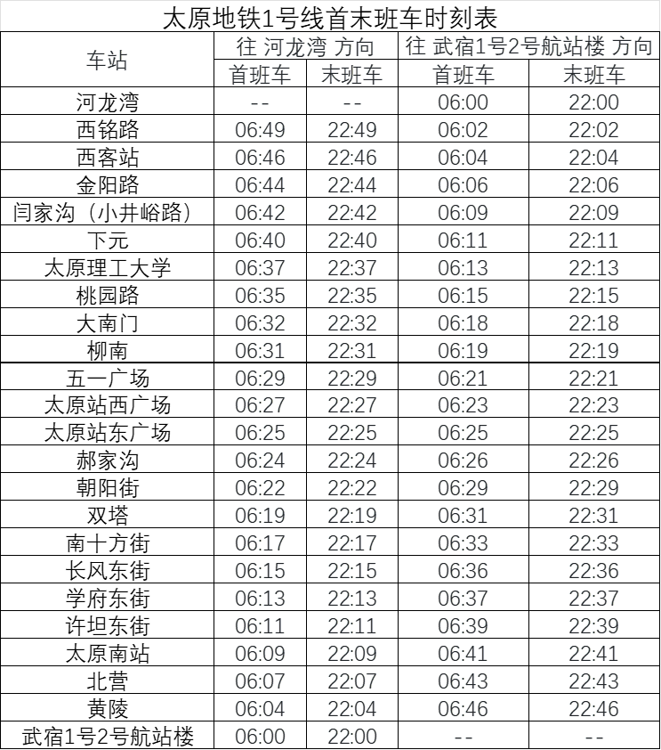

太原地铁乘车指南（2.1）

卡农（钢琴版）
太原是中国煤业大省——山西的省会城市，2020年12月26日，随着地铁2号线的开通，太原城市交通自此开启了地铁时代。目前太原地铁共运营有2条线路，分别为1号线和2号线，总里程约52km。太原地铁线路如下图：
诸线路对应标识色的官方色号及对应参考色值如下（仅供参考，本文的屏显色号值为以下值）：

太原地铁运营大事记如下表：
2020~2025年开通里程数（以km记）和开通车站数逐年累计统计图分别如下：


截至2025年5月，各线路开通里程数（以km记）和开通车站数统计图如下：
为了方便乘客出行，我们对太原地铁进行了详细的考察，并将考察结果汇总成如下乘车指南报告。乘车指南报告共分为安全进站乘车、进出闸机方式、乘车票价、便捷换乘、卫生间分布、首末班时刻表和其余公共交通方式接驳这几项内容。
乘车安全性十分重要，这里介绍相应安全乘车保障措施，在乘客乘车时需要留意。
安全检查（简称安检）是乘客乘坐地铁的必要环节。所有带包的乘客，不论包的大小都必须放入安检机进行透视检查，如果携带有液体则需拿给安检人员查验。安检处还有安检门用于检查乘客身上是否携带有违禁品。除此以外，车站安检工作人员也会使用安检工具随机检查乘客身上是否携带有违禁物品。当乘客遇到工作人员示意检查身上物品时，需要予以配合。
太原地铁全线车站均配备有除颤仪、医疗器材，在乘客突发疾病时可以及时应对处理。车厢内有紧急停车按钮、灭火器、紧急呼叫装置等器械，保障乘客乘车安全。


乘客在通过安检后需要通过闸机进站，而在到达目的地时也需要通过闸机出站，两者均需要客票验证。太原地铁支持诸多进出闸机验票方式，总体来讲分为四种：单程票、实体刷卡、二维码扫描和面容扫描。这四种方式均为右侧刷卡或扫描，左侧进出闸机。
单程票可以在人工窗口或购票机等处购买，购买时不仅支持现金，也支持使用支付宝、微信等常用移动支付手段。进站时在右侧闸机处刷卡，左侧进站；到达目的站后将车票投入右侧出站闸机即可从闸机左侧出站。如果单程票的面额不足以支付对应行程费用，则需要在票务中心补票。
单程票是国有资产，需要回收反复使用，因此乘车时需要妥善保管，且原则上不能带出车站（以下拍摄用票已交予地铁站作回收处理）。

太原地铁支持多种类型的刷卡方式，通常有储值卡、纪念次卡和交通联合卡等方式。进站和出站时，分别在进、出闸机上对应位置刷卡即可。
太原地铁储值卡（含学生卡）在各站服务中心均有销售，可以反复充值使用。如果卡内余额不足以支付对应行程费用，则需要充值后再出闸。
纪念次卡属于限量发售的乘车卡，卡记录着次数，每乘车一回扣除一次，不可充值。当次数用完时乘车卡不回收，留作纪念。请持有纪念次卡的乘客在规定时间内使用。
交通联合（China T-Union）是中华人民共和国交通运输部主导，北京中交金卡科技有限公司负责运营的一卡通互联互通系统，其相应的交通联合一卡通是具有支付功能的预付费卡。目前全国已有三百余城市一卡通支付有限责任公司推出了交通联合卡。乘客只要持有全国各地发行的含有交通联合标志的联合卡，均可刷卡乘坐太原地铁。
太原地铁全部车站的所有闸机均可使用支付宝小程序、微信小程序、银联云闪付内的地铁专用二维码乘车。使用前需要提前在对应App内开卡，使用时只需调出对应渠道的电子地铁乘车码，进站和出站时在对应闸机上各扫描一次即可。
此外，还有一种方式是在手机客户端下载太原地铁官方App（听景），并绑定已开卡的支付宝、微信支付即可扫描二维码乘车。进入App就会出现二维码界面。
点击“扣款渠道”，会出现支付宝和微信两种方式。乘客可以根据自身需要开通相应的扣款渠道，并设置默认优先扣款渠道。
该方法不需要给App内部充值，也不收取押金，直接通过大众熟悉的常用渠道扣款。需要特别注意的是，由于二维码本身包含有用户个人的信息，因此会随时自动更新。乘客不可使用二维码屏幕截图来进出闸机，也不建议在非进出闸期间长期暴露二维码于亮屏状态，以免泄露个人信息。
使用具有NFC功能安卓系统手机（如华为、小米、Oppo、Vivo等）及其对应手表或手环的乘客可以在相应的设备里开通各地的交通联合虚拟卡，和该地对应的交通联合实体卡具有同等效力。使用该方法进出站时，只需将手机背面的感应区靠近闸机刷卡区域即可。电子虚拟交通联合卡刷卡速度快于二维码扫描，因此推荐持有上述功能手机、手表或手环的乘客使用。
太原地铁支持面容扫描乘车。太原地铁面容扫描可作为单程票售卖，须在单程票售卖机购买车票并录入人脸信息，也可在听景APP录入人脸直接过闸。使用时站在可以刷脸的闸机前以正常仪态正对屏幕，待系统在短时间内识别面容信息后，闸机便可打开，乘客此时可以直接通过闸机。需要注意的是，佩戴口罩的乘客不必摘下口罩即可完成面容扫描。目前太原地铁各车站均支持面容扫描。
太原轨道交通执行里程分段计价票制，起步价2元可乘坐5公里，5公里以上部分，票价每增加1元的晋级里程为5公里，5公里，6公里，7公里，不设置封顶票价。若从出行起点到出行终点有多种乘坐方案，按照最短路径计费。
不过需要特别注意的是，进站时间限制在120分钟（即2小时）之内，否则超过此时间长度出站将会按照最高票价收费，因此乘客需严格把握好在站内的乘车时间。
太原地铁票务优惠包括以下内容：
如果想要快捷、有效地乘坐列车和使用地铁设施，就有必要事先了解47个地铁车站的基本要素信息。这里介绍车站类型、方向信息、站台结构等几方面内容，而后续的出行指南说明也与其密切相关。以下内容如无特殊说明，所有名称均代指车站且后面不添加额外的“站”字。
根据车站可以换乘不同的线路与否，可以将车站分为换乘站和非换乘站。目前太原地铁设置换乘站1个，可以不出站换乘其他线路列车；其余46个车站为非换乘站。换乘站及其换乘线路如下。
太原地铁现有车站均为地下车站，站厅位于站台的上方，站台门为自底至顶的屏蔽门。

终点站对于地铁具有重要意义，因为一条非环线线路的方向必须由该线路的终点站在各个站统一确定，这对于乘车以及寻找车内必要设施（如自动扶梯、直梯、卫生间等）具有重要意义。太原地铁线路的方向如下：
太原地铁站台目前均为岛式站台。此外还将介绍其它常见站台结构，以供读者参考。
岛式站台结构示意图如下（图中绘有人形象的位置是可以穿行的站台区域，粗黑线表示站台门，栅格线是铁轨，后同）：
右轨行驶的列车到达岛式站台时，一般左侧的车门会打开。岛式站台的优势是明显的。如果需要到对侧乘车，只需直接穿过站台到对面即可；并且自动扶梯、无障碍直梯、楼梯等设施只需要设计一套。太原地铁大多数车站的站台均为岛式站台。
西班牙式站台结构示意图如下：
西班牙式站台，即一岛两侧式站台，铁轨位于岛式站台的两侧，另有两个侧式站台位于铁轨外侧，两个方向站台可通过中间的岛式站台直接相通。西班牙式站台可满足大客流换乘站的需求，当地铁列车停靠站台时，车门可一侧开启下客，另一侧开启上客，乘客可快速分流，以免发生拥挤或者踩踏事故，在保证乘客安全出行的同时，提升了列车进站和发车速度。列车到达西班牙式站台时，一般两侧的车门均会打开。在已开通的车站中，下元站（1号线）是西班牙式站台。
太原地铁站台具体类型汇总如下表：
太原地铁重视文化建设，全线设有特色车站和出站口数座。1号线全线车站装修主题为“能源之都”，注重体现文化性、简约性和舒适性；2号线车站装修主题则为“寻梦晋阳”，造型提取中国古建筑结构和色彩元素，以“暖黄灰”作为空间主要色彩格调，在保证简洁大气的前提下于细节处展现当地特色文化。

太原地铁列车均为6编组A型车，屏蔽门设置有外部站台门编号，以贴纸的形式粘贴在站台门上方一角（不同线路贴纸样式略有不同，但都有车厢号+站台门编号的形式）。编号分线路有如下规则：
下文中均以“车厢号-站台门编号”的形式介绍便捷换乘和便捷出站车门。
如果想要方便、快捷在换乘站换乘其他线路，不仅需要熟悉诸换乘站的换乘规则，同时也要了解以站台门编号为基础的便利换乘策略，通过查表来实现最优的换乘。
下面给出这1个换乘站的具体换乘规则，然后以图示的方式汇总便捷换乘车门编号，需要换乘的乘客可以提前在对应车门处上车。
大南门有如下的换乘规则：
大南门的1号线岛式站台位于2号线岛式站台上方，两者呈T字型相交分布。由1号线换乘2号线，既可以直接由站台中部换乘通道下一层到2号线站台，也可以上楼返回站厅再下两层到2号线站台；由2号线换乘1号线，既可以直接由站台尖草坪方向头部换乘通道上一层到1号线站台，也可以上楼返回站厅再下一层到1号线站台。
对应便捷换乘站台门编号示意图如下所示：
2便捷换乘" title="大南门1->2便捷换乘"> 1便捷换乘" title="大南门2->1便捷换乘">下面依据便捷原则，给各条线路各个方向的便捷出站车门编号。
地铁1号线河龙湾方向和武宿1号2号航站楼方向的便捷出站车门如下所示。


地铁2号线西桥方向和尖草坪方向的便捷出站车门如下所示。

太原地铁均设置有男女卫生间，且均位于车站的收费区域。
以下讨论收费区的卫生间位置描述。由于卫生间均位于站台的某一端，因此在一条线路中可以使用终点站与“头”组合来描述卫生间的位置。
为了方便乘客迅速找到车站的卫生间，诸线路卫生间列为下表以供查询。

太原地铁可以和城市公共交通汽车、客运大巴、国家客运铁路、市域铁路和民航机场有良好的接驳。
太原地铁大多数车站均可与城市公共交通汽车（简称公交车）接驳。在出口附近可以看到如下的地图，该地图上明确标注出轨道交通车站周边的公交站名称、位置分布及对应的公交车线路号。需要换乘公交车的乘客可以提前查询需要换乘的公交车线路号，然后乘坐地铁到达对应车站后可以查到接驳公交站的具体位置。
太原公交公司还在2号线沿线专门开行了轨道交通接驳专线。轨道交通接驳专线如下表：
此外，使用移动端听景App也可以查询到每个站点的公交车接驳服务。
太原地铁可以和汽车客运西站、太原汽车站实现接驳,从长途客运站转乘地铁也非常方便。
乘坐地铁1号线到达西客站，从B口出站向左即可进入太原汽车客运西站广场。
乘坐地铁1号线到达五一广场站，从C口出站向前步行400米，或到达太原站西广场站，从B口出站向前步行500米即可到达太原汽车站。
太原地铁能和国家客运铁路（简称国铁）的太原南站相接驳，接驳车站是1号线的太原南站。
乘坐国铁到达太原南站出闸欲转乘地铁1号线时，需要从东出站口出站后，直接根据站厅指示即可前往对应区域乘坐地铁。
而由地铁欲转乘国铁，只需从A或B口出站后，乘坐扶梯到达太原南站东进站口即可。需要注意的是，如需现场购买火车票的乘客需从A口出站。
由于目前太原站东站房尚未投入使用，乘客欲去往太原站乘车需在太原站西广场站出站。乘坐国铁到达太原站出闸欲转乘地铁1号线时，需要从西出站口出站后，根据指示牌找到地下通道U6出口，进一步按照指引即可到达地铁站。
而由地铁欲转乘国铁，通过D出站口出站进入地下通道后即可直接通往太原站。
太原地铁在地铁1号线的武宿1号2号航站楼可以与民航机场接驳。乘坐飞机到达太原武宿国际机场时，从T1航站楼1层的到达口或T2航站楼1层的到达口过马路后即可方便地进入武宿1号2号航站楼站转乘1号线。乘客需要根据自己飞机所落的航站楼来确定。需要注意的是，1号线末班车后仍有部分航班落地，此时无法转乘1号线，需改用其他交通方式。
而乘坐1号线线到达武宿1号2号航站楼时，只需从A口出站过马路后即可前往对应的航站楼（T1或T2）转乘飞机。
太原地铁诸线路首末班时刻表如下所示（数据来源为对应官方网站），乘客可以根据自身出行情况加以参考。此外，遇节假日或其他一些特殊活动时段，轨道交通首末班车会有一定的变化，具体时刻表在太原地铁官方网站、微信公众号均会及时发布，乘客可以随时留意。

目前以地铁为代表的城市轨道交通已经在多个城市普及，而太原地铁未来将会为市民出行提供了极大的便利。本文通过细致、深入的考察，汇总出以上乘车指南，旨在为乘客在出行时提供较为完备的参考。
太原地铁3号线也已在规划中，建成后将联通太原西部和南部地区。未来几年，还会有多条地铁线路陆续开通运营，而老吴也将继续进行细致的考察与汇总。地铁已经让这座城市焕发出新的活力，我们一起期待着它未来的发展！
附：太原地铁规划图